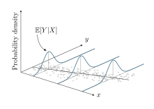

library(NHANES)
library(dplyr)
library(ggplot2)
library(mgcv)
library(patchwork)
library(magrittr)
df <- NHANES::NHANES
# It's important to pay attention to reference categories. Here, our categorical
# variables are Race, Education, and Marital Status.
df %<>% mutate(
Race1 = relevel(Race1, 'White'),
Education = relevel(Education, 'College Grad'),
MaritalStatus = relevel(MaritalStatus, "Married")
)
lm_model <- lm(
BPSysAve ~ AgeMonths * Race1 + Education + MaritalStatus + Poverty,
data = df
)
gam_model <- gam(
BPSysAve ~ s(AgeMonths, by = Race1) + Education + MaritalStatus + s(Poverty),
data = df
)
lm_plt <- interactions::interact_plot(
lm_model, pred = AgeMonths, modx = Race1, interval = TRUE)
gam_plt <- interactions::interact_plot(
gam_model, pred = AgeMonths, modx = Race1, interval = TRUE)
lm_plt <- lm_plt +
ggtitle("Race-Age Interaction Effects on Sys. Blood Pressure",
subtitle = 'Linear Model') +
guides(
linetype = guide_legend(nrow = 2, byrow = TRUE),
fill = guide_legend(nrow = 2, byrow = TRUE),
color = guide_legend(nrow = 2, byrow = TRUE)) +
theme(legend.position = 'bottom')
gam_plt <- gam_plt +
ggtitle("Race-Age Interaction Effects on Sys. Blood Pressure",
subtitle = 'Generalized Additive Model') +
theme(legend.position = 'bottom') +
guides(
linetype = guide_legend(nrow = 2, byrow = TRUE),
fill = guide_legend(nrow = 2, byrow = TRUE),
color=guide_legend(nrow=2,byrow=TRUE)
)
lm_plt + gam_pltLinear Regression
An approximate answer to the right problem is worth a good deal more than an exact answer to an approximate problem. John Tukey
\[ \newcommand{\E}{\mathbb{E}} \newcommand{\Var}{\text{Var}} \newcommand{\Cov}{\text{Cov}} \newcommand{\R}{\mathbb{R}} \newcommand{\N}{\mathcal{N}} \newcommand{\MLE}{\text{MLE}} \renewcommand{\bar}{\overline} \newcommand{\supp}[1]{\text{supp}(#1)} \newcommand\independent{\perp\!\!\!\perp} \renewcommand{\d}[0]{\mathrm{d}} \newcommand{\pp}[2][]{\frac{\partial#1}{\partial#2}} \newcommand{\dd}[2][]{\frac{\mathrm d#1}{\mathrm d#2}} \]

On the history of regression:
See Stigler (1981) on the invention of least squares, and Stigler (1997) discussing the history of linear “regression”.
Stigler, Stephen M. 1981. “Gauss and the Invention of Least Squares.” The Annals of Statistics 9 (3): 465–74. http://www.jstor.org/stable/2240811.
———. 1997. “Regression Towards the Mean, Historically Considered.” Statistical Methods in Medical Research 6 (2): 103–14. https://doi.org/10.1177/096228029700600202.
Linear Regression
Our typical problem is to estimate the linear relationship between \(Y\) and \(p\) covariates/predictors \((x_1, ..., x_p)\).
In modeling, we can distinguish between the systematic and random parts of a model.
Consider the model:
\[Y_i = \beta_0 + \beta_1 x_1 + ... + \beta_p x_{ip}, \quad i = 1, ..., n,\]
with the assumptions:
- (Size of Data) \(p < n\),
- (Mean-Zero Error) \(\E(\varepsilon_i) = 0\)
- (Homoscedasticity) \(\Var(\varepsilon_i) = \sigma^2\),
- (Uncorrelated Error) \(\Cov(\varepsilon_i, \varepsilon_j) = 0.\)
We can also write this model in the following way: \[\mathbf Y = \mathbf X \pmb \beta + \pmb \epsilon, \quad \text{ where } \] \[\mathbf Y = \begin{bmatrix} Y_1 \\ Y_2 \\ \vdots \\ Y_n \end{bmatrix}, \quad \pmb X = \begin{bmatrix} 1 & x_{11} & x_{12} & \cdots & x_{1p} \\ 1 & x_{21} & x_{22} & \cdots & x_{2p} \\ \vdots & \vdots & \vdots & \ddots & \vdots \\ 1 & x_{n1} & x_{n2} & \cdots & x_{np} \end{bmatrix},\] \[\pmb \beta = \begin{bmatrix} \beta_0 \\ \beta_1 \\ \vdots \\ \beta_p \end{bmatrix}, \quad \pmb \epsilon = \begin{bmatrix} \epsilon_0 \\ \epsilon_1 \\ \vdots \\ \epsilon_p\end{bmatrix}.\]
We assume that this is the true model. Our task is to do the best we can coming up with \(\hat {\pmb \beta}\) such that \(\mathbf X \hat{\pmb \beta}\) is as close as possible to \(\mathbf y\).
We’ll use \(\mathbf y\) to refer to observed values and \(\mathbf Y\) to denote the corresponding random vector that generates these observations. That is to say, \(\E(\mathbf Y) = \mathbf X \pmb \beta\).
Euclidean distance is usually defined as \[d(\mathbf y, \mathbf X \pmb \beta) = \sqrt{(\mathbf y - \mathbf X \pmb \beta)^\top (\mathbf y - \mathbf X \pmb \beta)}.\]
Since it’s easier to minimize over a function that doesn’t involve a square-root, and squaring is a monotone transformation on \(\mathbb R^+\), the vector \(\hat{\pmb \beta}\) that minimizes \(d(\mathbf y, \mathbf X \pmb \beta)\) will also minimize \(d(\mathbf y, \mathbf X \pmb \beta)^2\).
\[ \begin{aligned} \text{Let } S(\pmb \beta) & =d(\mathbf y, \mathbf X \pmb \beta)^2 = (\mathbf y - \mathbf X \pmb \beta)^\top (\mathbf y - \mathbf X \pmb \beta) \\ & = \mathbf y^\top \mathbf y - 2 \mathbf y^\top \mathbf X \pmb \beta + \pmb \beta^\top \mathbf X^\top \mathbf X \pmb \beta. \end{aligned} \]
Why do we call this \(S\)?
- It is the squared Euclidean distance;
- Also the sum of squared errors/residuals (SSE).
\(S(\pmb \beta)\) is our objective function, and the minimization of \(S(\pmb \beta)\) under the assumption of normal errors leads to the best linear unbiased estimator (BLUE) of the regression coefficients due to the Gauss-Markov Theorem.
To find the OLS estimate, we minimize our loss function by computing the gradient, setting it equal to zero, and solving for the coefficient vector \(\pmb \beta\) satisfying this constraint.
\[ \begin{aligned} \pp[S(\pmb \beta)]{\pmb \beta} & = -2 \mathbf X^\top \mathbf y + 2 \mathbf X^\top\mathbf X \pmb \beta \stackrel {set} = \pmb 0 \\ & 2 \mathbf X^\top (\mathbf y - \mathbf X\pmb \beta) = 0 \end{aligned} \] From this we get the least squares normal equations: \[\mathbf X^\top \mathbf X \hat {\pmb \beta} = \mathbf X'\mathbf y,\] \[ \hat \beta = (\mathbf X^{\top} \mathbf X)^{-1} \mathbf X^\top \mathbf y,\] provided that \((\mathbf X^\top \mathbf X)^{-1}\) exists, which it will if the predictors are linearly independent.
Tip
How exactly was the above worked out?
First, expand \(S(\pmb \beta)\): \[ \begin{aligned} S(\pmb \beta) & = (\mathbf y - \mathbf X \pmb \beta)^{\top}(\mathbf y - \mathbf X \pmb \beta)\\ & = \mathbf y^\top \mathbf y - \mathbf y^\top \mathbf X \pmb \beta - (\mathbf X \pmb \beta)^{\top} \mathbf y + (\mathbf X \pmb \beta)^\top \mathbf X \pmb \beta \end{aligned} \]
Since \((\mathbf X \pmb \beta)^\top \mathbf y = \mathbf y^\top \mathbf X \pmb \beta\) (as it’s a scalar and equal to its transpose), we can simplify to \[ S(\pmb \beta) = \mathbf y^\top \mathbf y - 2 \mathbf y^\top \mathbf X \pmb \beta + \pmb \beta^\top \mathbf X^\top \mathbf X \pmb \beta. \]
- The derivative of \(\mathbf y^\top \mathbf y\) with respect to \(\pmb \beta\) is 0
- The derivative of \(-2\mathbf y^\top \mathbf X \pmb \beta\) with respect to \(\pmb \beta\) is \(-2 \mathbf X^\top \mathbf y\) since the derivative of \(\mathbf a^\top \pmb \beta\) is \(\mathbf a\). (Page 10, 2.4.1 of Petersen and Pedersen (2012))
- The derivative of \(\pmb \beta^\top \mathbf X^\top \mathbf X \pmb \beta\) with respect to \(\pmb \beta\) is \(2 \mathbf X^\top \mathbf X \pmb \beta\) by applying the derivative rule for quadratic forms. (See equation 81 from Petersen and Pedersen (2012), and observe that \(\mathbf X^\top \mathbf X\) is symmetric).
Hence \[\nabla S(\pmb \beta) = -2 \mathbf X^\top \mathbf y + 2 \mathbf X^\top \mathbf X \pmb \beta = \pmb 0. \]
Setting \(\nabla S(\pmb \beta) = 0\) gives us the normal equations: \[\mathbf X^\top \mathbf X \hat {\pmb \beta} = \mathbf X^\top \mathbf y.\]
Finally we solve for \(\hat \beta\) by multiplying both sides by \((\mathbf X^\top \mathbf X)^{-1}\): \[\hat \beta = (\mathbf X^\top \mathbf X)^{-1} \mathbf X^\top \mathbf y.\]
Petersen, Kaare Brandt, and Michael Syskind Pedersen. 2012. “The Matrix Cookbook.” https://www.math.uwaterloo.ca/~hwolkowi/matrixcookbook.pdf.
Visualizing Interactions
One of the interesting things from Methods was learning about useful off-the-shelf tools like jtools::summ and interactions::interact_plot.
Here, I’ll construct an example to show off interactions::interact_plot based on a hypothetical research question focused on how the harmful effects of structural racism compound over the lifecourse, so we suspect there should be a (potentially nonlinear) interaction between age and race on health measures when we lack any observations of explicit measures of discrimination to study. Below are models fit adjusting for age-race/ethnicity interaction and then we use interactions::interact_plot to visualize the difference in average systolic blood pressure.
These examples are for educational purposes only, and not scientific findings.
The dataset I’ll use is available from the NHANES package. Check out ?NHANES::NHANES for more details, but some useful excerpts:
The NHANES target population is “the non-institutionalized civilian resident population of the United States”. NHANES, (American National Health and Nutrition Examination surveys), use complex survey designs (see http://www.cdc.gov/nchs/data/series/sr_02/sr02_162.pdf) that oversample certain subpopulations like racial minorities. Naive analysis of the original NHANES data can lead to mistaken conclusions. The percentages of people from each racial group in the data, for example, are quite different from the way they are in the population.
… NHANES contains 10,000 rows of data resampled from NHANESraw to undo these oversampling effects. NHANES can be treated, for educational purposes, as if it were a simple random sample from the American population.
{kind=link}
Why is the Race1 variable like that?
I find the levels of what NHANES provides as the Race1 variable kind of interesting in that Mexican and Hispanic are distinguished, so I wanted to check on that a bit further:
# checking on racial categorization
table(NHANES::NHANES$Race1)
Black Hispanic Mexican White Other
1197 610 1015 6372 806 I’m not entirely sure why Hispanic / Mexican are distinguished, but one might find explanation in this handy Pew Research chart on “What Census Calls Us: A Historical Timeline”: https://www.pewresearch.org/wp-content/uploads/2020/02/PH_15.06.11_MultiRacial-Timeline.pdf
The NHANES data are from the 2009-2012 sample years, so one can see that the Census distinguishes Hispanic Ethnicity into
- Mexican, Mexican American, Chicano
- Puerto Rican
- Cuban
- Another Hispanic, Latino, Spanish origin
We can interpret the above figure as showing elevated systolic blood pressure associated with older age, especially among the Hispanic population after adjusting for differences associated with education, marital status, and the ratio of household income to the poverty-line.